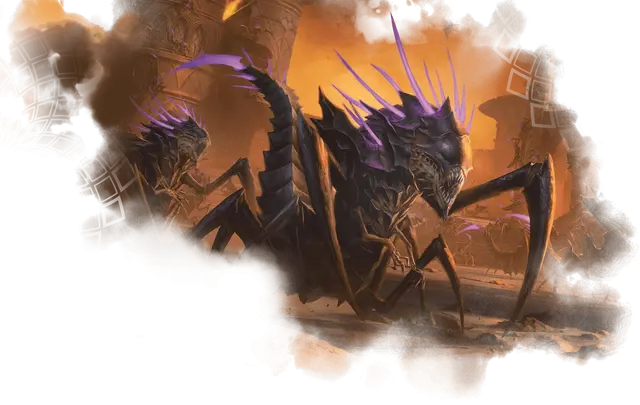

Охотник на магов
Mage Hunter
Большой Монстр, законно-злой

Класс Доспеха 15 (природный доспех)
Хиты 85 (10к10 + 30)
Скорость 40 футов, летая 10 футов (парит только в форме стража), лазая 40 футов (только в форме охотника)
| мод | спас | ||
|---|---|---|---|
| СИЛ | 19 | +4 | +4 |
| ЛОВ | 15 | +2 | +2 |
| ТЕЛ | 16 | +3 | +3 |
| мод | спас | ||
|---|---|---|---|
| ИНТ | 11 | +0 | +3 |
| МДР | 17 | +3 | +6 |
| ХАР | 10 | +0 | +3 |
Навыки Восприятие +9, Скрытность +5
Иммунитет к состояниям глухота, испуг, ослепление, очарование, сбивание с ног
Чувства слепое зрение 120 футов (слеп за его пределами), пассивное Восприятие 19
Языки понимает Общий, но не говорит
Опасность 5 (1800 опыта)
Бонус мастерства +3
Особенности
Ощущение магии. Охотник знает местоположение каждого заклинателя, активного заклинания и магического предмета в пределах 120 футов от себя.
Паучье лазание (только в форме охотника). Охотник на магов может лазать по сложным поверхностям, включая потолки, без совершения проверок характеристик.
Действия
Мультиатака (только в форме охотника). Охотник совершает две атаки Когтем.
Коготь (только в форме охотника). Рукопашная атака оружием: +7 к попаданию, досягаемость 5 футов, одна цель. Попадание: 15 (2к10 + 4) рубящего урона.
Хвост. . Рукопашная атака оружием: +7 к попаданию, досягаемость 10 футов, одна цель. Попадание: 22 (4к8 + 4) колющего урона, и цель схвачена (Сл высвобождения 15). Пока этот захват не закончится, цель опутана и охотник не может атаковать хвостом другую цель.
Выслеживание мага (только в форме стража). Охотник испускает импульс энергии, который помогает ему лучше находить свою магическую добычу. Каждое существо в пределах 120 футов от охотника, способное накладывать заклинание, должно преуспеть в спасброске Мудрости Сл 14, иначе будет магически отмечено охотником на 1 час.
Будучи отмеченным, существо не может спрятаться от охотника и не получает никакой пользы от состояния невидимости против охотника. Кроме того, пока отмеченное существо находится на том же плане существования, что и охотник, охотник всегда знает расстояние и направление до существа.
Бонусные действия
Смена формы. Охотник складывается в свою похожую на трутня форму стража или разворачивается в свою форму охотника. Его игровая статистика одинакова в каждой форме.
Реакции
Поглощать и уничтожать. Когда охотник получает урон от заклинания, он получает только половину спровоцировавшего урона (округляется в меньшую сторону). Если существо, наложившее заклинание, находится в пределах 60 футов от охотника, это существо должно совершить спасбросок Ловкости Сл 14, иначе получит вторую половину урона.
Описание
Охотники на магов - это отвратительные пауконогие существа, используемые Ориком для преследования магов. Эти существа, могут от рождения чувствовать магию через светящиеся фиолетовые шипы на их спинах.
Охотник на магов обычно находится в форме стража, ромбовидного трутня с повышенной способностью чувствовать и находить магов. Как только он находит добычу, охотник на магов принимает свою паукообразную форму и преследует свои цели с жестоким мастерством.